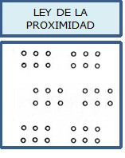
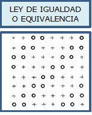
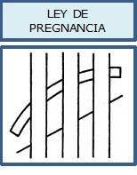
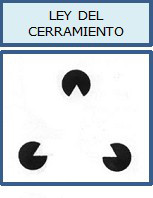
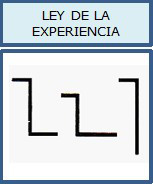
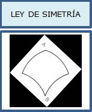
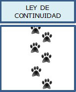

Debemos determinar y documentar para que nos sirva de referencia los fundamentos básicos de un lenguaje visual para las interfacez de usuario que tenga en cuenta los principios de un buen diseño con las posibilidades técnicas.
Percepción: mirar + ver + recibir + interpretar + organizar + analizar
La percepción visual es el complejo proceso de recepción e interpretación significativa de cualquier información recibida. Ojo y cerebro tienden a comprender y organizar lo que vemos imponiéndole un sentido racional aunque particularizado por la experiencia de cada individuo. Tras esa primera función de reconocimiento, nuestro sentido de la percepción entra en una fase analítica que comprende la interpretación y organización del estímulo percibido, mediante la cual se estructuran los elementos de esa información distinguiendo entre fondo y figura, contornos, tamaños, contrastes, colores, grupos, etc. Igualmente, por la percepción, tendemos a complementar aquellos elementos que puedan dar definición, simetría, continuidad, unificación y “buena forma” a la información visual. La decodificación del significado de la información visual va a depender también de otros factores de influencia recopilados por la experiencia personal e intelectual de cada individuo, lo que en definitiva hacen que la misma se realice bajo un aspecto puramente subjetivo. En los sistemas de comunicación visual y en el diseño gráfico y publicitario, se hace uso frecuente de determinados principios generales relacionados con la percepción, que tienen como objetivo principal conseguir una postura más activa y común del receptor frente al estímulo y mensaje visual. Estas normas, derivadas por lo general de las teorías y leyes establecidas por la Gestalt.
David Hume supuso que entre las distintas ideas existían unas fuerzas de atracción de tal forma que la sucesión y combinación de ideas en nuestra mente no es arbitraria o caótica. Estas fuerzas que vinculan unas ideas con otras no son fuerzas estrictas sino unas “fuerzas suaves”. Las leyes de la asociación son las leyes que describen dichas fuerzas entre ideas, y muestran los mecanismos espontáneos que sigue nuestra mente en la elaboración de las ideas complejas a partir de las simples.
La percepción es un conjunto de procesos y actividades relacionados con la estimulación que alcanza a los sentidos, mediante los cuales obtenemos información respecto a nuestro hábitat, las acciones que efectuamos en él y nuestros propios estados internos. Por lo tanto, se puede decir que la percepción es la imagen mental que se forma con ayuda de la experiencia y necesidades. Es resultado de un proceso de selección, interpretación y corrección de sensaciones. Es personal, selectiva y temporal.
Aunque los estímulos sensoriales pueden ser los mismos para todas las personas, cada una de ella percibirá cosas distintas. Este fenómeno nos lleva a concebir la percepción como resultado de dos tipos de inputs:
Para la Gestalt, la persona posee una capacidad innata para decodificar y percibir los estímulos de exterior
La mente configura, a través de ciertas leyes, los elementos que llegan a ella a través de los canales sensoriales (percepción) o de la memoria (pensamiento, inteligencia y resolución de problemas). En nuestra experiencia del medio ambiente, esta configuración tiene un carácter primario sobre los elementos que la conforman, y la suma de estos últimos por sí solos no podría llevarnos, por tanto, a la comprensión del funcionamiento mental. Este planteamiento se ilustra con el axioma: “el todo es mayor que la suma de sus partes”, con el cual se ha identificado con mayor frecuencia a esta escuela psicológica. Algunas de las leyes que enuncia la teoría de la Gestalt son las que se describen a continuación.
Cuando las partes de una totalidad reciben un mismo estímulo, se unen formando grupos en el sentido de la mínima distancia. Esta ordenación se produce de modo automático y, sólo por una resistencia del perceptor, o por otra ley contradictoria, puede anularse esta lectura
En esta imagen, los treinta y seis puntos representados se agrupan por proximidad, adquiriendo más importancia cada bloque de seis que las unidades por separados. Estos seis grupos, forman a su vez una figura considerada como un conjunto.
Cuando concurren varios elementos de diferentes clases, hay una tendencia a constituir grupos con los que son iguales. Esta experiencia la presentamos aislada, para evitar la influencia de otras leyes y por ello están equidistantes todos los elementos integrantes. Si las desigualdades están basadas en el color, el efecto es más sorprendente que en la forma. Abundando en las desigualdades, si se potencian las formas iguales con un color común, se establecen condicionantes potenciadores para el fenómeno agrupador de la percepción.
En esta imagen, prevalece la agrupación por la igualdad de los elementos. Los círculos se agrupan con independencia de las cruces, creando alineaciones en diagonal que son de mayor distancia. Esta ley gana a la ley de proximidad, ya que cuando dos leyes actúan antagónicamente pueden quedar anulados los efectos perceptivos, los cuales se ordenan de forma alternativa a la voluntad del perceptor.
La ley de pregnancia o ley de la buena forma defiende la idea de la tendencia de una forma a ser más regular, simple, simétrica, ordenada, comprensible, memorizable, etc. Por este motivo se asocia esta ley con la expresión de “buena forma” o “formas con destino común”. Por lo tanto, las partes de una figura que tiene “buena forma” o indican una dirección o destino común, forman con claridad unidades autónomas en el conjunto. Esta ley permite la fácil lectura de figuras que se interfieren formando aparentes confusiones, pero prevaleciendo sus propiedades de buena forma o destino común, se ven como desglosadas del conjunto.
En esta imagen, las seis líneas paralelas que se agrupan como tres bandas verticales, constituyen una buena forma, ya que son simples, equilibradas y simétricas. Las dos curvas concéntricas que las atraviesan alternativamente, también tienen buena forma, y por ello se ven como una banda única y no como cuatro formas independientes. Es también el “destino común” de esas curvas, lo mismo que le sucede a la recta oblicua, lo que les proporciona unidad, a pesar de su interrupción.
La línea sabemos que es una creación del dibujo, una abstracción, y es difícil encontrarla aislada en la naturaleza, por ello, siempre se asocian al límite de una superficie, formando su contorno. Las líneas de un dibujo normalmente se consideran como elementos abstractos predispuestos a cualquier fin. Las líneas que circundan una superficie son, en iguales circunstancias, captadas más fácilmente como unidad o figura, que aquellas otras que se unen entre sí. Las circunferencias, cuadriláteros o triángulos producen el efecto de cerramiento. Esta nueva puede ser operativa porque señala el hecho de que las líneas rectas paralelas forman grupos más definidos y estables que los puntos que delimitan peor un espacio.
Una buena figura, como pasa con el triángulo equilátero, no precisa siquiera la materialización de la línea de cerramiento, es suficiente la iniciación correcta en los puntos notables de sus vértices, para que se produzca un cerramiento perceptivo. En este caso se potencia la ley de cerramiento con la ley de la buena forma.
Esta es una ley muy discutida porque ataca cuestiones de fondo, ya que la psicología de la Gestalt defiende el nativismo, frente a la psicología asociacionista. El papel que desarrolla la madurez y la experiencia en el proceso de la visión configurada no es simple, pero su experimentación con seres humanos conlleva serias implicaciones. A las ideas nativistas que la Gestalt retoma de Descartes, Kant o Mueller, se oponen las empiristas de Hume, Hobbes, Locke, Berkely o Helmholtz y, últimamente, las teorías trasaccionalistas, que defienden la percepción como un producto del proceso de aprendizaje, en el que interviene el ambiente y la experiencia. La mayoría de los autores se inclinan por la influencia que tiene esta ley en los fenómenos perceptivos. Desde el punto de vista biológico, el propio sistema nervioso se ha ido formando por el condicionamiento del mundo exterior; podemos quedar en que el propio choque con las realidades formales, y la función, han ido configurando la propia estructura del órgano perceptor. También observamos que las experiencias individuales humanas condicionan la percepción al especializarse. Hay profesionales que se adiestran en lecturas invertidas, otros en la visión y comprensión de negativos fotográficos y radiográficos, en discriminaciones sutiles de productos por el tacto, olor o visión. Y estos profesionales reaccionan ante un mismo estímulo de un modo diferente en función de su experiencia adquirida. Una serie de pruebas han demostrado que si se presentan figuras poco familiares para que luego sean reproducidas, éstas terminarán pareciéndose a las figuras familiares, más que a los originales mostrados como modelos.
La ley de simetría tiene tal trascendencia, que desborda el campo de la percepción de las formas para constituir uno de los fenómenos fundamentales de la naturaleza. La biología, la matemática, la química y la física, y hasta la misma estética se organizan siguiendo las leyes especulares, simples o múltiples, de la simetría. Es una ley muy arraigada en el ser humano, cuya propia estructura fisiológica, también es simétrica, con una simetría especular sobre un plano vertical que lo divide en izquierda y derecha, pero no de arriba-abajo. Del mismo modo, en animales y plantas existen leyes de simetría que ordenan las partes respecto a uno o más ejes. Y no sólo es el entorno natural visible, sino que el macro y el microcosmo parecen regirse por leyes de simetría. Los fenómenos que se derivan de estos hechos proporcionan material suficiente para investigar sobre esta ley universal de la simetría. Porque si de las cosas naturales pasamos a las obras realizadas por el hombre, vuelve a chocarnos esta persistente forma que va desde el templo griego, pasando por las catedrales góticas, a las obras más avanzadas de la ingeniería naval o aerodinámica. Quizás sea la gravedad, el equilibrio, la aerodinámica y otras leyes, las que impongan necesariamente esta forma funcional, pero también tenemos que tener en cuenta tantas obras cuyas simetrías no tienen justificaciones funcionales. Esta teoría tiene uno de sus pilares fundamentales en las formas organizativas y simplificadoras de la simetría, y también en la aceptación universal de sus propiedades.
La figura representada en esta imagen una figura simétrica pero, mientras no se descubre su eje de simetría, provoca una ilusión cóncava-convexa, que insinúa relieve. Se percibe como un segmento cuadrangular esférico, como una vela hinchada de un barco. El fenómeno desaparece y se convierte en forma plana cuando trazamos el eje A B y giramos la figura en vertical, convirtiéndola en una simetría izquierda-derecha.
Esta ley se constituye con elementos que son comunes a otras leyes ya mencionadas. Tiene elementos de cierre porque partículas independientes tratan de formar figuras, partiendo de la ley de cerramiento. De igual modo toma propiedades de la ley de buena figura o destino común al provocar elecciones de las formas más simples y rotundas. También toma elementos de la ley de experiencia, pues se decide por aquellas formas que tienen figuras reconocibles o son más familiares al perceptor. Esta ley tiene como caracteres propios la manera de presentarnos las formas. Estas se nos muestran de manera incompleta, inconclusas, como abreviatura o esquemas de fácil interpretación. Precisamente es en esta forma taquigráfica como se proponen en las representaciones perspectivas la clave del “etcéteras”, que inducen al espectador de un conjunto a la idea de concreción en formas continuadas y semejantes a otras que son correctas y definidas.
Según la Ley de la figura-fondo, el proceso perceptivo remite a un mecanismo básico según el cual tendemos a focalizar nuestra atención sobre un objeto o determinado grupo de objetos (figura) destacándolos del resto de los objetos que los envuelven (fondo). En cada una de estas imagenes hay dos partes diferenciadas: